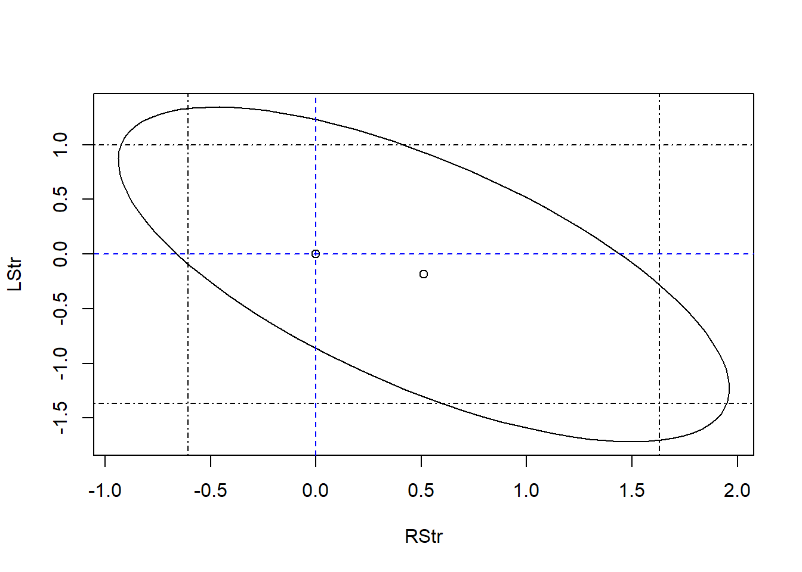

Warning: `geom_errorbarh()` was deprecated in ggplot2 4.0.0.
ℹ Please use the `orientation` argument of `geom_errorbar()` instead.
`height` was translated to `width`.
90% CI for age does not include 0 but 95% CI for age does, therefore the p-value lies within 0.05 and 0.10.
q1b
Code
library(ellipse)
Attaching package: 'ellipse'
The following object is masked from 'package:graphics':
pairs
Code
plot(ellipse(lm_q1a, c(4, 5)), type ="l")points(coef(lm_q1a)[4], coef(lm_q1a)[5])abline(v =confint(lm_q1a)[4, c(1, 2)], lty =4)abline(h =confint(lm_q1a)[5, c(1, 2)], lty =4)abline(v =0, lty =2, col ="blue")abline(h =0, lty =2, col ="blue")points(0, 0, pch =21)
Origin (\(\beta_age = 0\), \(\beta_lbph = 0\)) falls within both the \(95\%\) joint confidence ellipse and the rectangular region defined by the individual \(95\%\) univariate confidence intervals.
Neither predictor is statistically significant when considered in isolation within the full model.
Crucially, because the origin lies inside the joint confidence ellipse, we do not reject the null hypothesis that both coefficients are simultaneously zero. This is consistent with the result of the formal F-test for nested models:
Analysis of Variance Table
Model 1: lpsa ~ lcavol + lweight + svi + lcp + gleason + pgg45
Model 2: lpsa ~ lcavol + lweight + age + lbph + svi + lcp + gleason +
pgg45
Res.Df RSS Df Sum of Sq F Pr(>F)
1 90 46.768
2 88 44.163 2 2.6048 2.5951 0.08034 .
---
Signif. codes: 0 '***' 0.001 '**' 0.01 '*' 0.05 '.' 0.1 ' ' 1
The non-significant p-value from this F-test confirms the visual evidence from the ellipse: we fail to find sufficient statistical evidence to reject the null hypothesis.
Call:
lm(formula = lpsa ~ lcavol + lweight + svi, data = prostate)
Residuals:
Min 1Q Median 3Q Max
-1.72964 -0.45764 0.02812 0.46403 1.57013
Coefficients:
Estimate Std. Error t value Pr(>|t|)
(Intercept) -0.26809 0.54350 -0.493 0.62298
lcavol 0.55164 0.07467 7.388 6.3e-11 ***
lweight 0.50854 0.15017 3.386 0.00104 **
svi 0.66616 0.20978 3.176 0.00203 **
---
Signif. codes: 0 '***' 0.001 '**' 0.01 '*' 0.05 '.' 0.1 ' ' 1
Residual standard error: 0.7168 on 93 degrees of freedom
Multiple R-squared: 0.6264, Adjusted R-squared: 0.6144
F-statistic: 51.99 on 3 and 93 DF, p-value: < 2.2e-16
Code
anova(lm_q1c, lm_q1a)
Analysis of Variance Table
Model 1: lpsa ~ lcavol + lweight + svi
Model 2: lpsa ~ lcavol + lweight + age + lbph + svi + lcp + gleason +
pgg45
Res.Df RSS Df Sum of Sq F Pr(>F)
1 93 47.785
2 88 44.163 5 3.6218 1.4434 0.2167
Since p-value is much larger than \(\alpha = 0.05\), we fail to reject the null hypothesis, \(H_0: \beta_{age} = \beta_{lbph} = \beta_{lcp} = \beta_{gleason} = \beta_{pgg45} = 0\).
We conclude that the five predictors removed from the full model do not collectively contribute statistically significant explanatory power to the model, hence the smaller model is preferable.
Q2
q2a
Code
data(cheddar, package ="faraway")
Code
lm_q2a <-lm(taste ~ ., data = cheddar)summary(lm_q2a)
Call:
lm(formula = taste ~ ., data = cheddar)
Residuals:
Min 1Q Median 3Q Max
-17.390 -6.612 -1.009 4.908 25.449
Coefficients:
Estimate Std. Error t value Pr(>|t|)
(Intercept) -28.8768 19.7354 -1.463 0.15540
Acetic 0.3277 4.4598 0.073 0.94198
H2S 3.9118 1.2484 3.133 0.00425 **
Lactic 19.6705 8.6291 2.280 0.03108 *
---
Signif. codes: 0 '***' 0.001 '**' 0.01 '*' 0.05 '.' 0.1 ' ' 1
Residual standard error: 10.13 on 26 degrees of freedom
Multiple R-squared: 0.6518, Adjusted R-squared: 0.6116
F-statistic: 16.22 on 3 and 26 DF, p-value: 3.81e-06
H2S and Lactic predictors are statistically significant at the \(5\%\) level.
q2b
Code
lm_q2b <-lm(taste ~exp(Acetic) +exp(H2S) + Lactic, data = cheddar)summary(lm_q2b)
Call:
lm(formula = taste ~ exp(Acetic) + exp(H2S) + Lactic, data = cheddar)
Residuals:
Min 1Q Median 3Q Max
-16.209 -7.266 -1.651 7.385 26.335
Coefficients:
Estimate Std. Error t value Pr(>|t|)
(Intercept) -1.897e+01 1.127e+01 -1.684 0.1042
exp(Acetic) 1.891e-02 1.562e-02 1.210 0.2371
exp(H2S) 7.668e-04 4.188e-04 1.831 0.0786 .
Lactic 2.501e+01 9.062e+00 2.760 0.0105 *
---
Signif. codes: 0 '***' 0.001 '**' 0.01 '*' 0.05 '.' 0.1 ' ' 1
Residual standard error: 11.19 on 26 degrees of freedom
Multiple R-squared: 0.5754, Adjusted R-squared: 0.5264
F-statistic: 11.75 on 3 and 26 DF, p-value: 4.746e-05
Lactic predictor is statistically significant at the \(5\%\) level.
q2c
Code
anova(lm_q2b, lm_q2a)
Analysis of Variance Table
Model 1: taste ~ exp(Acetic) + exp(H2S) + Lactic
Model 2: taste ~ Acetic + H2S + Lactic
Res.Df RSS Df Sum of Sq F Pr(>F)
1 26 3253.6
2 26 2668.4 0 585.2
No, because an F-test is only valid for comparing nested models, where one model is a restricted version of the other (i.e. the predictors of the smaller model are a smaller subset of the larger model).
In this case, the models rely on different functional forms of the predictor [\(log(x)\) vs \(x\)], thus the column space of one model is not a linear subspace the other.
Since \(R^2_{lm\_q2a} = 0.6518 > R^2_{lm\_q2b} = 0.5754\) and \(RSS_{lm\_q2a} = 2668.4 < RSS_{lm\_q2b} = 3253.6\), the first model provides a better fit to the data.
q2d
Code
cat("Taste would increase by", round(0.01*coef(lm_q2a)['H2S'], 3))
Taste would increase by 0.039
q2e
Code
cat("The H2S on the original scale will increase by ", (exp(0.01) -1) *100,"% when adding 0.01 on the (natural) log scale as adding 0.01 to the log scale is equivalent to multiplying by exp(0.01) on the original scale.",sep ="")
The H2S on the original scale will increase by 1.005017% when adding 0.01 on the (natural) log scale as adding 0.01 to the log scale is equivalent to multiplying by exp(0.01) on the original scale.
Q3
q3a
Code
data(teengamb, package ="faraway")lm_q3a <-lm(gamble ~ ., data = teengamb)summary(lm_q3a)
Call:
lm(formula = gamble ~ ., data = teengamb)
Residuals:
Min 1Q Median 3Q Max
-51.082 -11.320 -1.451 9.452 94.252
Coefficients:
Estimate Std. Error t value Pr(>|t|)
(Intercept) 22.55565 17.19680 1.312 0.1968
sex -22.11833 8.21111 -2.694 0.0101 *
status 0.05223 0.28111 0.186 0.8535
income 4.96198 1.02539 4.839 1.79e-05 ***
verbal -2.95949 2.17215 -1.362 0.1803
---
Signif. codes: 0 '***' 0.001 '**' 0.01 '*' 0.05 '.' 0.1 ' ' 1
Residual standard error: 22.69 on 42 degrees of freedom
Multiple R-squared: 0.5267, Adjusted R-squared: 0.4816
F-statistic: 11.69 on 4 and 42 DF, p-value: 1.815e-06
Sex and Income predictors are statistically significant at the \(5\%\) level.
q3b
Code
cat("For females, the difference in average weekly gambling between females and males, holding other factors constant, is",signif(summary(lm_q3a)$coefficients[2], 3),"pounds.")
For females, the difference in average weekly gambling between females and males, holding other factors constant, is -22.1 pounds.
q3c
Code
lm_q3c <-lm(gamble ~ income, data = teengamb)summary(lm_q3c)
Call:
lm(formula = gamble ~ income, data = teengamb)
Residuals:
Min 1Q Median 3Q Max
-46.020 -11.874 -3.757 11.934 107.120
Coefficients:
Estimate Std. Error t value Pr(>|t|)
(Intercept) -6.325 6.030 -1.049 0.3
income 5.520 1.036 5.330 3.05e-06 ***
---
Signif. codes: 0 '***' 0.001 '**' 0.01 '*' 0.05 '.' 0.1 ' ' 1
Residual standard error: 24.95 on 45 degrees of freedom
Multiple R-squared: 0.387, Adjusted R-squared: 0.3734
F-statistic: 28.41 on 1 and 45 DF, p-value: 3.045e-06
Code
anova(lm_q3c, lm_q3a)
Analysis of Variance Table
Model 1: gamble ~ income
Model 2: gamble ~ sex + status + income + verbal
Res.Df RSS Df Sum of Sq F Pr(>F)
1 45 28009
2 42 21624 3 6384.8 4.1338 0.01177 *
---
Signif. codes: 0 '***' 0.001 '**' 0.01 '*' 0.05 '.' 0.1 ' ' 1
Since p-value is much smaller than \(\alpha = 0.05\), we reject the null hypothesis, \(H_0: \beta_{sex} = \beta_{status} = \beta_{verbal} = 0\).
We conclude that the full model is preferred.
Q4
q4a
Code
data(sat, package ="faraway")
Code
lm_q4a_i <-lm(total ~ expend + ratio + salary, data = sat)summary(lm_q4a_i)
Call:
lm(formula = total ~ expend + ratio + salary, data = sat)
Residuals:
Min 1Q Median 3Q Max
-140.911 -46.740 -7.535 47.966 123.329
Coefficients:
Estimate Std. Error t value Pr(>|t|)
(Intercept) 1069.234 110.925 9.639 1.29e-12 ***
expend 16.469 22.050 0.747 0.4589
ratio 6.330 6.542 0.968 0.3383
salary -8.823 4.697 -1.878 0.0667 .
---
Signif. codes: 0 '***' 0.001 '**' 0.01 '*' 0.05 '.' 0.1 ' ' 1
Residual standard error: 68.65 on 46 degrees of freedom
Multiple R-squared: 0.2096, Adjusted R-squared: 0.1581
F-statistic: 4.066 on 3 and 46 DF, p-value: 0.01209
Analysis of Variance Table
Model 1: total ~ expend + ratio
Model 2: total ~ expend + ratio + salary
Res.Df RSS Df Sum of Sq F Pr(>F)
1 47 233443
2 46 216812 1 16631 3.5285 0.06667 .
---
Signif. codes: 0 '***' 0.001 '**' 0.01 '*' 0.05 '.' 0.1 ' ' 1
Code
# Dropping all predictorslm_q4a_iii <-lm(total ~1, data = sat)anova(lm_q4a_iii, lm_q4a_i)
Analysis of Variance Table
Model 1: total ~ 1
Model 2: total ~ expend + ratio + salary
Res.Df RSS Df Sum of Sq F Pr(>F)
1 49 274308
2 46 216812 3 57496 4.0662 0.01209 *
---
Signif. codes: 0 '***' 0.001 '**' 0.01 '*' 0.05 '.' 0.1 ' ' 1
salary is not statistically significant (\(\text{p-value}_\text{salary} = 0.0667 < 0.05\)).
All the individual t-tests are not statistically significant yet the overall F-test is.
The p-value for the F-statistics is less than \(\text{p-value}_\text{F-statistics} = 0.01209 < 0.05\), we reject the null hypothesis \(H_0: \beta_\text{salary} = \beta_\text{ratio} = \beta_\text{expend} = 0\).
This indicates that at least one of the predictor has a statistically significant effect on the response.
This usually happens when the predictors are highly correlated with each other and we have a situation where the whole is greater than the sum of its parts.
q4b
Code
lm_q4b <-lm(total ~ expend + ratio + salary + takers, data = sat)summary(lm_q4b)
Call:
lm(formula = total ~ expend + ratio + salary + takers, data = sat)
Residuals:
Min 1Q Median 3Q Max
-90.531 -20.855 -1.746 15.979 66.571
Coefficients:
Estimate Std. Error t value Pr(>|t|)
(Intercept) 1045.9715 52.8698 19.784 < 2e-16 ***
expend 4.4626 10.5465 0.423 0.674
ratio -3.6242 3.2154 -1.127 0.266
salary 1.6379 2.3872 0.686 0.496
takers -2.9045 0.2313 -12.559 2.61e-16 ***
---
Signif. codes: 0 '***' 0.001 '**' 0.01 '*' 0.05 '.' 0.1 ' ' 1
Residual standard error: 32.7 on 45 degrees of freedom
Multiple R-squared: 0.8246, Adjusted R-squared: 0.809
F-statistic: 52.88 on 4 and 45 DF, p-value: < 2.2e-16
Code
anova(lm_q4a_i, lm_q4b)
Analysis of Variance Table
Model 1: total ~ expend + ratio + salary
Model 2: total ~ expend + ratio + salary + takers
Res.Df RSS Df Sum of Sq F Pr(>F)
1 46 216812
2 45 48124 1 168688 157.74 2.607e-16 ***
---
Signif. codes: 0 '***' 0.001 '**' 0.01 '*' 0.05 '.' 0.1 ' ' 1
They output the same p-value.
Since \(t_i = \frac{\hat{\beta}_i}{se(\hat{\beta}_i)}\)
Since the sum-of-squares decomposition and F-statistics reduces to the usual equal-variance (pooled) two sample t-test in the case of \(\alpha = 2\) treatments - with the realisation that an F-statistics with one numerator and \(k\) denominator degrees of freedom is equivalent to a t-statistics with \(k\) degrees of freedom, viz: \(F_{1,k} = t^2_{k}\)
Call:
lm(formula = Distance ~ I(RStr + LStr) + RFlex + LFlex, data = punting)
Residuals:
Min 1Q Median 3Q Max
-21.698 -9.494 -5.155 9.081 20.611
Coefficients:
Estimate Std. Error t value Pr(>|t|)
(Intercept) -71.2694 63.1447 -1.129 0.288
I(RStr + LStr) 0.1741 0.1940 0.898 0.393
RFlex 2.3137 1.4013 1.651 0.133
LFlex -0.5772 0.8035 -0.718 0.491
Residual standard error: 15.94 on 9 degrees of freedom
Multiple R-squared: 0.7174, Adjusted R-squared: 0.6232
F-statistic: 7.615 on 3 and 9 DF, p-value: 0.00769
Code
anova(lm_q6c, lm_q6a)
Analysis of Variance Table
Model 1: Distance ~ I(RStr + LStr) + RFlex + LFlex
Model 2: Distance ~ RStr + LStr + RFlex + LFlex
Res.Df RSS Df Sum of Sq F Pr(>F)
1 9 2287.4
2 8 2132.6 1 154.72 0.5804 0.468
\(\text{p-value}_{F-test} = 0.468 > 0.05\), hence we do not reject the null hypothesis \(H_0: \beta_{RStr} = \beta_{LStr}\). We conclude that there is no significant difference between left leg strength and right leg strength.
q6d
Code
plot(ellipse(lm_q6a, c(2, 3)), type ="l")points(lm_q6a$coef["RStr"], lm_q6a$coef["LStr"])abline(v =confint(lm_q6a)[2, c(1, 2)], lty =4)abline(h =confint(lm_q6a)[3, c(1, 2)], lty =4)abline(v =0, lty =2, col ="blue")abline(h =0, lty =2, col ="blue")points(0, 0, pch =21)

Origin (\(\beta_RStr = 0\), \(\beta_LStr = 0\)) falls within both the \(95\%\) joint confidence ellipse and the rectangular region defined by the individual \(95\%\) univariate confidence intervals.
Neither predictor is statistically significant when considered in isolation within the full model.
Crucially, because the origin lies inside the joint confidence ellipse, we do not reject the null hypothesis that both coefficients are simultaneously zero. This is consistent with our previous analysis.
q6e
We will obtain the same results as in q6c: Failing to reject the null hypothesis \(H_0: \beta_{RStr} = \beta_{LStr}\) and return to the same conclusion that there is no significant difference between left leg strength and right leg strength, in other words, the total leg strength is sufficient (Total leg strength is defined by adding the right and left leg strengths together).
Call:
lm(formula = Distance ~ RStr + LStr + I(RFlex + LFlex), data = punting)
Residuals:
Min 1Q Median 3Q Max
-17.510 -13.417 2.165 7.988 23.316
Coefficients:
Estimate Std. Error t value Pr(>|t|)
(Intercept) -44.26189 63.52790 -0.697 0.504
RStr 0.70392 0.48904 1.439 0.184
LStr 0.01518 0.51703 0.029 0.977
I(RFlex + LFlex) 0.46194 0.43975 1.050 0.321
Residual standard error: 17.15 on 9 degrees of freedom
Multiple R-squared: 0.6728, Adjusted R-squared: 0.5637
F-statistic: 6.168 on 3 and 9 DF, p-value: 0.01451
Code
anova(lm_q6f, lm_q6a)
Analysis of Variance Table
Model 1: Distance ~ RStr + LStr + I(RFlex + LFlex)
Model 2: Distance ~ RStr + LStr + RFlex + LFlex
Res.Df RSS Df Sum of Sq F Pr(>F)
1 9 2648.4
2 8 2132.6 1 515.72 1.9346 0.2017
\(\text{p-value}_{F-test} = 0.2017 > 0.05\), hence we do not reject the null hypothesis \(H_0: \beta_{RFlex} = \beta_{LFlex}\). We conclude that there is no significant difference between left leg flexibility and right leg flexibility.
Call:
lm(formula = Distance ~ I(RStr + LStr) + I(RFlex + LFlex), data = punting)
Residuals:
Min 1Q Median 3Q Max
-18.948 -13.929 1.020 9.795 29.111
Coefficients:
Estimate Std. Error t value Pr(>|t|)
(Intercept) -36.1525 60.9655 -0.593 0.566
I(RStr + LStr) 0.3700 0.1430 2.588 0.027 *
I(RFlex + LFlex) 0.4093 0.4228 0.968 0.356
---
Signif. codes: 0 '***' 0.001 '**' 0.01 '*' 0.05 '.' 0.1 ' ' 1
Residual standard error: 16.73 on 10 degrees of freedom
Multiple R-squared: 0.6541, Adjusted R-squared: 0.585
F-statistic: 9.457 on 2 and 10 DF, p-value: 0.004948
Code
anova(lm_q6e, lm_q6a)
Analysis of Variance Table
Model 1: Distance ~ I(RStr + LStr) + I(RFlex + LFlex)
Model 2: Distance ~ RStr + LStr + RFlex + LFlex
Res.Df RSS Df Sum of Sq F Pr(>F)
1 10 2799.1
2 8 2132.6 2 666.43 1.25 0.337
\(\text{p-value}_{F-test} = 0.337 > 0.05\), hence we do not reject the null hypothesis \(H_0: \beta_{RStr} = \beta_{LStr} AND \beta_{RFlex} = \beta_{LFlex}\). We conclude that there is no significant difference between left-right symmetry for both strength and flexibility. Hence, symmetry is a reasonable claim.